Crazy experiences
I believe each of us see, hear or experience moments, especially around the vulnerable and hurting, that never leave our mind and heart.
Hover a photo, or tap on a phone, for where and when.
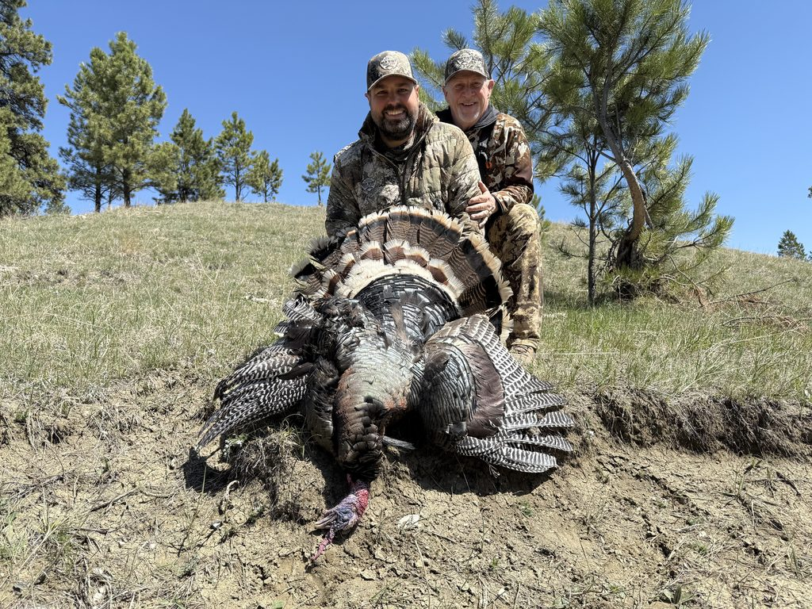
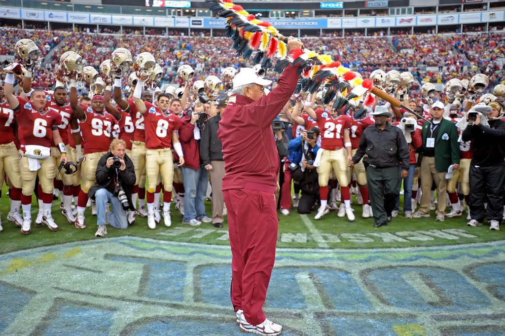
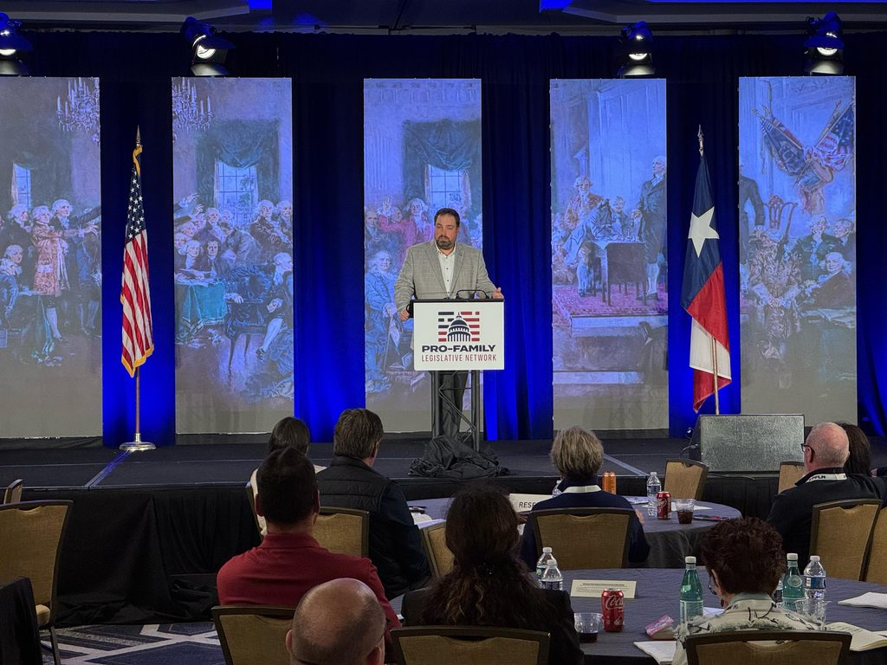
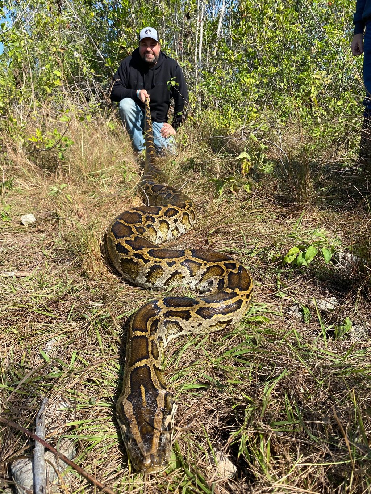
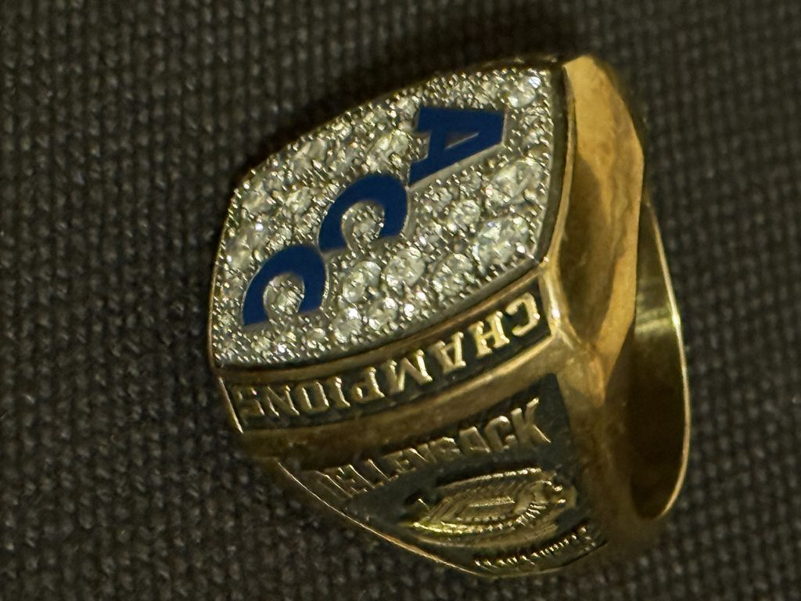
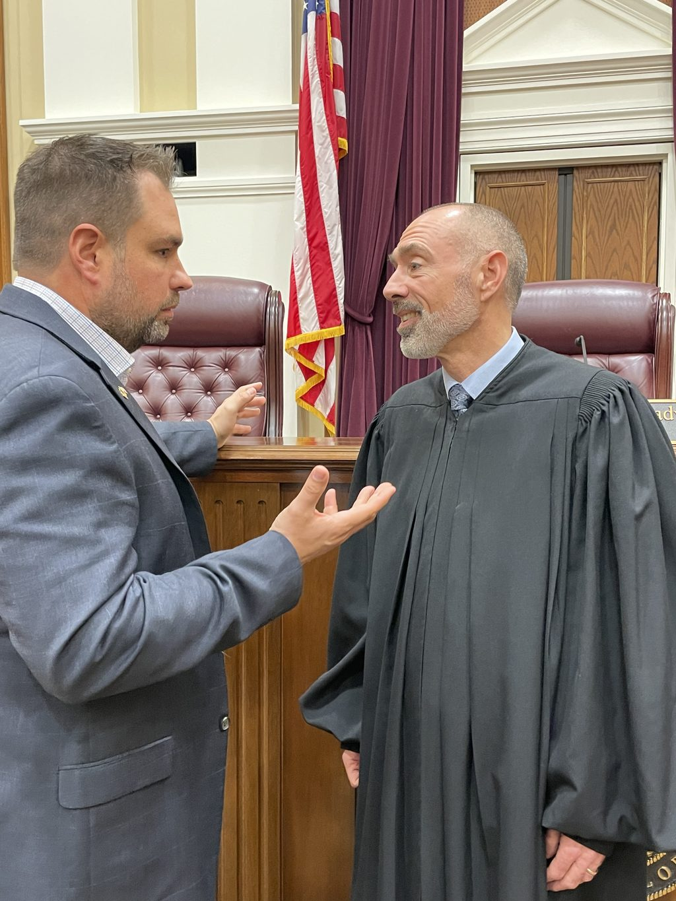
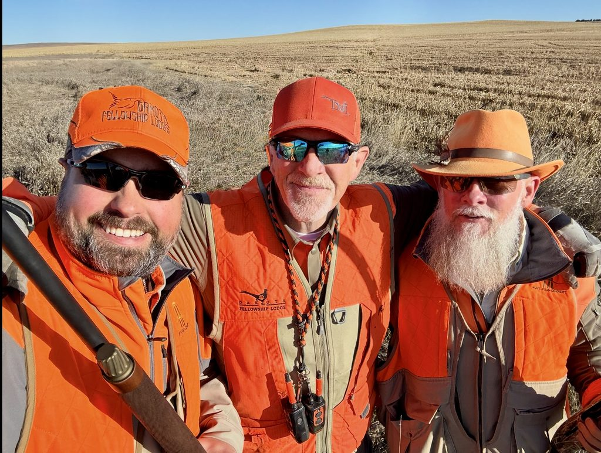
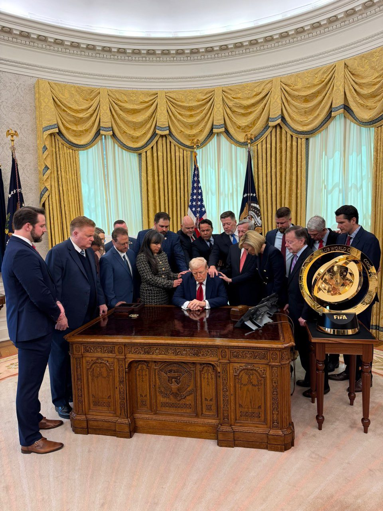
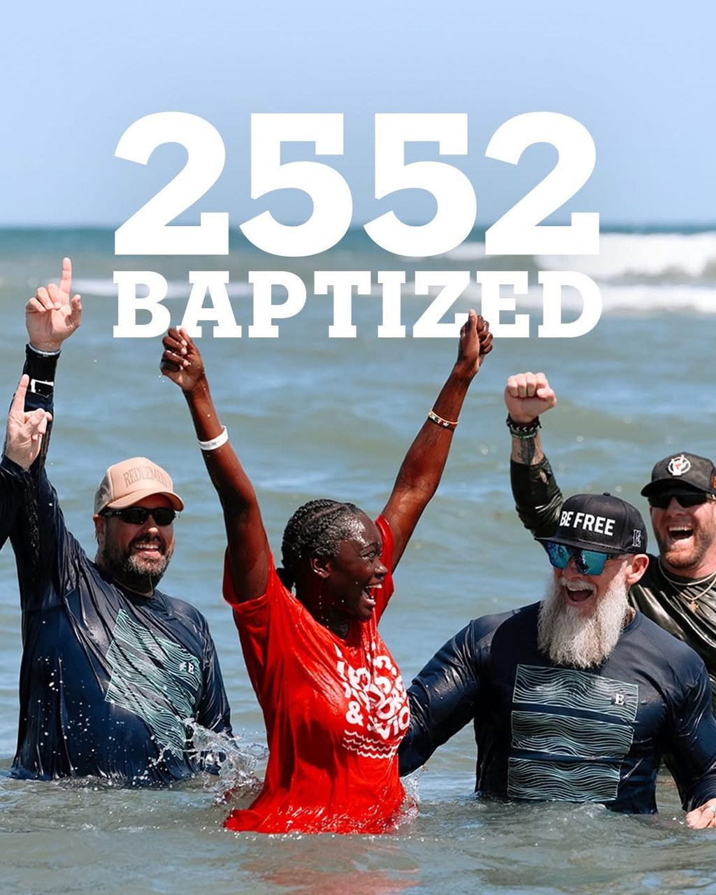
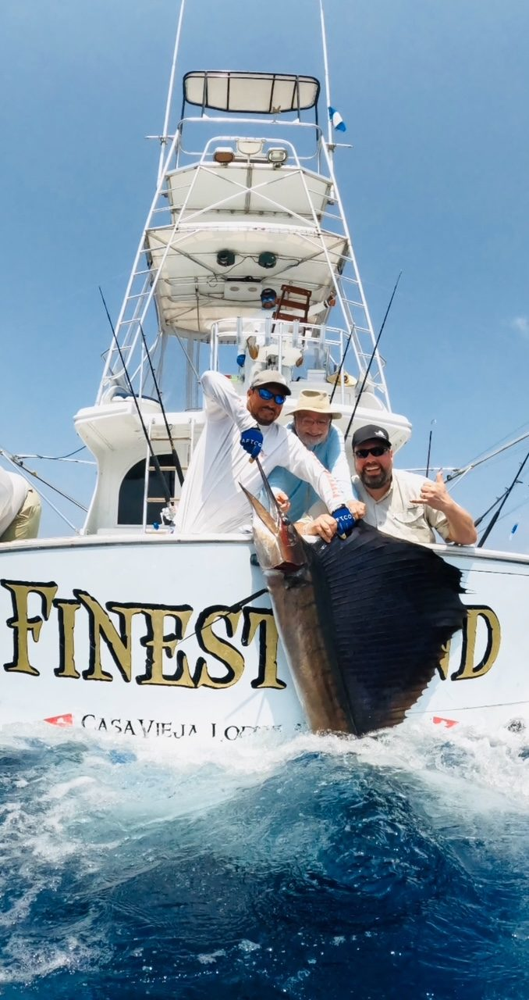
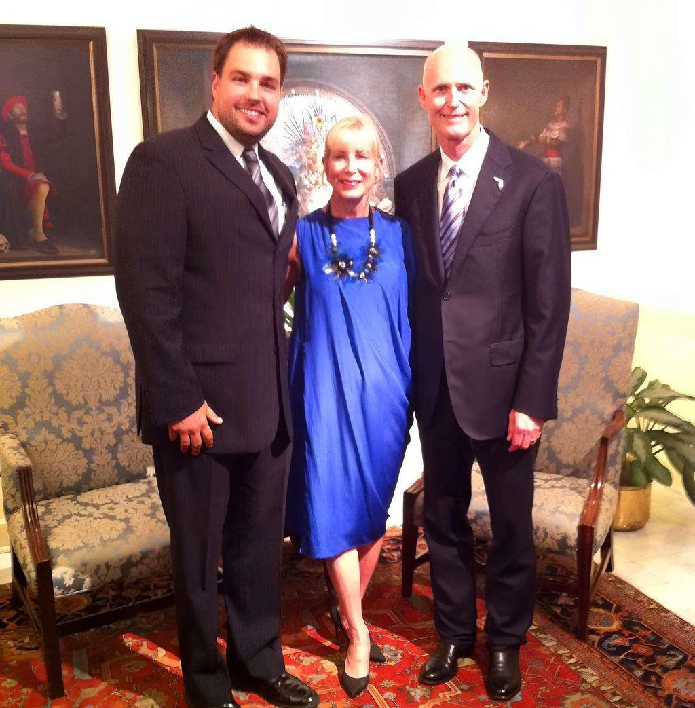
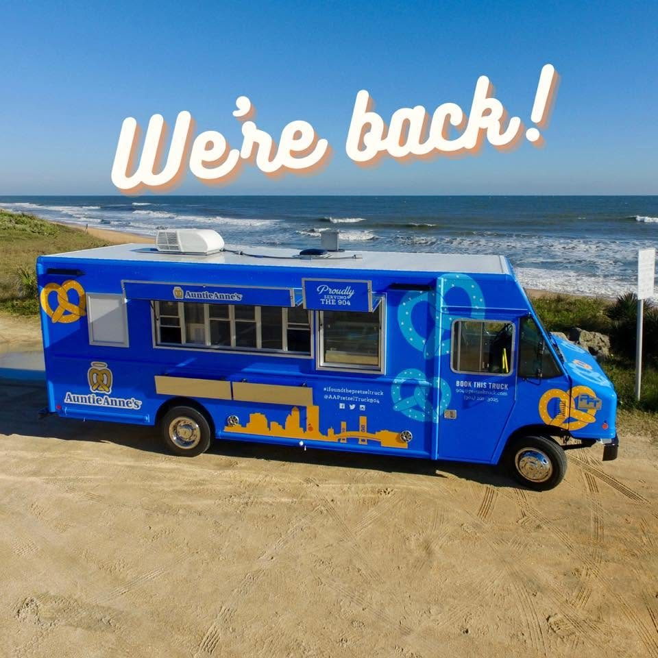
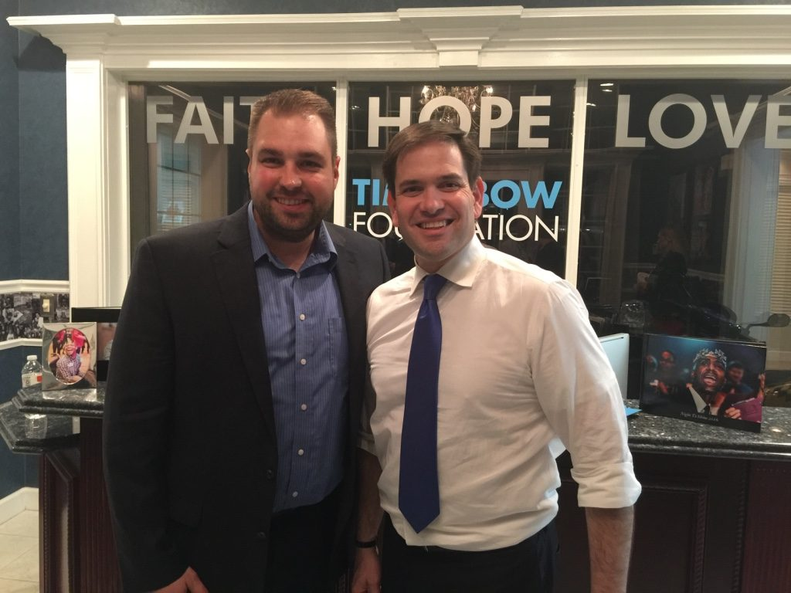
Every one of these has a story
Invite Erik to speak